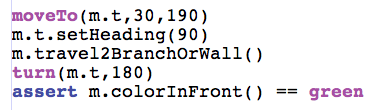

| So far our turtle moves the way we want it to however we also
want it to leave a trail as it moves. To do this we will use the
addOvalFilled() supplied by JES. |
|
| First write the test that we leave a green trail for our
first pass when travelling. There are a couple of changes we need to make this pass. For one, we need to change colorInFront() to return green. We also need to add the filled oval in the travel method. |
 |